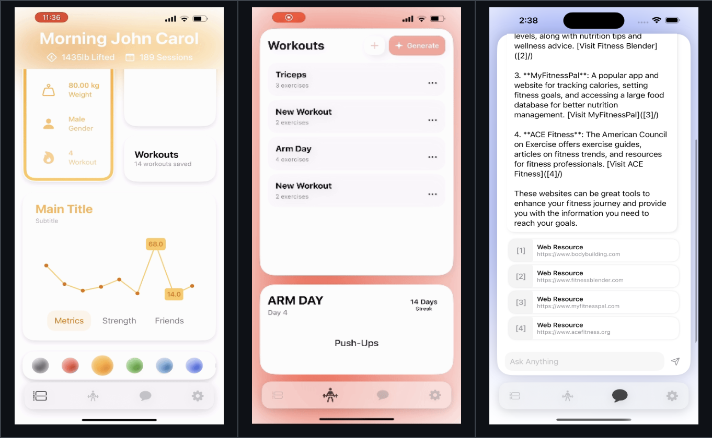
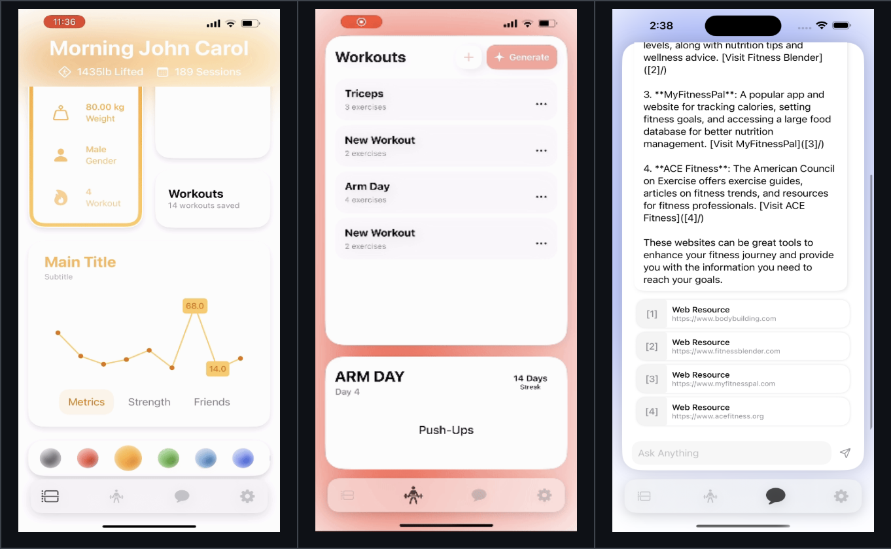

Full Stack iOS Fitness Tracking Application with RESTful API support.
RepBook is a comprehensive full-stack iOS application designed to revolutionize personal fitness tracking and workout planning. Developed using Objective-C, Swift, Node.js, and PostgreSQL, the application offers a seamless experience for users to monitor their fitness journey. Users can access a personalized dashboard to view real-time metrics, build custom workouts, and interact with an AI assistant that provides tailored fitness recommendations based on their exercise history. The backend is powered by a robust RESTful API, ensuring secure data management and real-time synchronization between the client and server. User authentication is fortified using bcrypt for password hashing, and sensitive data is securely stored using Apple’s Keychain on iOS devices. The application emphasizes modular design principles, employing a Network Manager utility to abstract and optimize network interactions, enhancing scalability and maintainability.
// Express.js route handler for user login
app.post('/login', async (req, res) => {
try {
const { email, username, password } = req.body;
let query, values;
if (email) {
query = 'SELECT member_id, password, auth_key FROM members WHERE email = $1';
values = [email];
} else if (username) {
query = 'SELECT member_id, password, auth_key FROM members WHERE username = $1';
values = [username];
} else {
return res.status(400).send('Email or username is required');
}
const result = await pool.query(query, values);
if (result.rows.length > 0) {
const user = result.rows[0];
const match = await bcrypt.compare(password, user.password);
if (match) {
res.json({ member_id: user.member_id, auth_key: user.auth_key });
} else {
res.status(401).send('Invalid credentials');
}
} else {
res.status(401).send('Invalid credentials');
}
} catch (err) {
console.error(\`Error during login: \${err.message}\`);
res.status(500).send(err.message);
}
});
// Swift implementation for secure storage using Keychain
class KeychainManager {
static func save(_ data: Data, service: String, account: String) -> OSStatus {
let query: [String: Any] = [
kSecClass as String: kSecClassGenericPassword,
kSecAttrService as String: service,
kSecAttrAccount as String: account,
kSecValueData as String: data
]
SecItemDelete(query as CFDictionary)
return SecItemAdd(query as CFDictionary, nil)
}
static func load(service: String, account: String) -> Data? {
let query: [String: Any] = [
kSecClass as String: kSecClassGenericPassword,
kSecAttrService as String: service,
kSecAttrAccount as String: account,
kSecReturnData as String: kCFBooleanTrue!,
kSecMatchLimit as String: kSecMatchLimitOne
]
var item: CFTypeRef?
let status = SecItemCopyMatching(query as CFDictionary, &item)
guard status == noErr else { return nil }
return (item as? Data)
}
static func loadAuthKey() -> String? {
guard let authKeyData = load(service: "YourAppService", account: "authKey"),
let authKey = String(data: authKeyData, encoding: .utf8) else {
return nil
}
return authKey
}
}
The backend provides the following API endpoints:
| Method | Endpoint | Description | Parameters | Authentication Required |
|---|---|---|---|---|
| POST | /signup |
Register a new user with account and metrics data. |
Request Body: firstName, lastName, dateOfBirth, email, password, username, heightCm, weightKg, gender, workoutFrequencyOptional: bodyFatPercentage, goalType, activityLevel, restingHeartRate, bmrCalories
|
No |
| POST | /login |
Authenticate a user and provide an auth key. |
Request Body: email or username, password
|
No |
| GET | /checkUsername/:username |
Check if a username is available for registration. |
Path Parameter: username
|
No |
| POST | /exercises |
Record a new workout with specified exercises. |
Request Body: memberId, exerciseIds (array)Header: Auth-Key
|
Yes |
| POST | /updateUserInfo/:memberId |
Update personal information for a specific user. |
Path Parameter: memberIdRequest Body: firstName, lastName, dateOfBirth, email, usernameHeader: Auth-Key
|
Yes |
| GET | /userDataAndMetrics/:memberId |
Retrieve user data and physical metrics. |
Path Parameter: memberIdHeader: Auth-Key
|
Yes |
| POST | /setGymMembership |
Update or set gym membership details for a user. |
Request Body: memberId, gym, address, membershipTypeHeader: Auth-Key
|
Yes |
| GET | /workouts/:memberId |
Retrieve all workouts for a specific member. |
Path Parameter: memberIdHeader: Auth-Key
|
Yes |
| GET | /membersMetrics/:memberId |
Retrieve physical metrics data for a specific member. |
Path Parameter: memberIdHeader: Auth-Key
|
Yes |
| POST | /createWorkout/:memberId |
Create a new workout record for a member. |
Path Parameter: memberIdRequest Body: workoutName, exerciseIds (array)Header: Auth-Key
|
Yes |
| GET | /exercises |
Retrieve a list of all exercises. |
Query Parameter: page (optional)
|
No |
| GET | /exercises/search |
Retrieve exercises based on a workout ID or search query. |
Query Parameter: workoutId or q (search query)
|
No |
| GET | /fetchSafeData/:memberId |
Retrieve safe user data for a specific member. |
Path Parameter: memberId
|
No |
| DELETE | /workouts/:workoutId |
Delete a workout by its ID. |
Path Parameter: workoutIdHeader: Auth-Key
|
Yes |
| PUT | /workouts/:workoutId |
Rename a workout by its ID. |
Path Parameter: workoutIdRequest Body: newNameHeader: Auth-Key
|
Yes |
| POST | /loggedWorkouts |
Save a completed workout for a specific member. |
Request Body: memberId, workoutId, timeHeader: Auth-Key
|
Yes |
Note: Endpoints requiring authentication expect the Auth-Key header and the memberId (either as a path parameter or in the request body). The authentication middleware checks if the provided Auth-Key matches the one stored for the given memberId.
The architecture of RepBook is grounded in modern software engineering principles, emphasizing modularity, scalability, and security. The backend employs a RESTful API design, allowing stateless communication between the client and server. This design choice facilitates easier scaling and maintenance, as well as integration with potential future platforms. User authentication is a critical component, secured using bcrypt hashing for passwords. By leveraging bcrypt's adaptive hash function, the system mitigates the risk of password cracking through computationally intensive hashing processes: \[ \text{Hashed Password} = \text{bcrypt}(\text{Plain Password}, \text{Salt}) \] The application ensures ACID compliance in its PostgreSQL database schema, providing reliable transactions and data integrity. Database normalization techniques are applied to reduce redundancy and improve data consistency. On the client side, the iOS application is developed using Swift and SwiftUI, providing a responsive and intuitive user interface. The Network Manager utility abstracts API calls, handling asynchronous network requests and parsing JSON responses efficiently. The AI assistant feature is built upon machine learning models that analyze user data to generate personalized workout plans and fitness recommendations. This microservices-based approach allows the AI component to scale independently and integrate seamlessly with the main application.
The project leverages a robust technology stack: Node.js: Serves as the backend environment, handling server-side logic, API endpoints, and database interactions with PostgreSQL. Swift and SwiftUI: Used for developing the iOS client application, providing high performance and a modern user interface. PostgreSQL: Manages data storage with advanced features like ACID compliance and strong support for complex queries. Security is a paramount concern throughout the stack. Bcrypt ensures secure password hashing on the server, while Apple's Keychain services provide encrypted storage for sensitive data on the client side.
 
